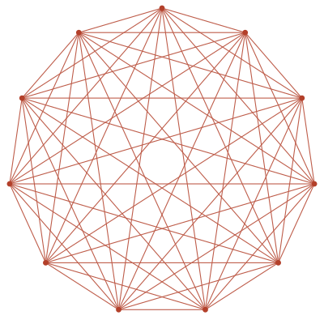

Johannes M. Henn
Director at the Max Planck Institute for Physics (Munich) and Honorary Professor at Ludwig-Maximilians-Universität München. I study the mathematical structures behind quantum field theory — how elementary particles scatter, and what hidden geometry governs those processes.
Beyond research, I am engaged in science management and science policy, holding an MPA in science management.
In a nutshell — for everyone
When particles collide at enormous energies — as they do at CERN's Large Hadron Collider — quantum theory tells us how likely each possible outcome is. Computing these probabilities, called scattering amplitudes, is famously hard. My research develops new mathematical ideas that make these computations dramatically simpler, and in doing so has uncovered surprising connections between particle physics, geometry, and even cosmology. Curious to learn more? See the outreach section.
How can I help you?
Join the group
How to apply for MSc & PhD positions: what to include, IMPRS admission rounds, and fellowships (Hanrieder, DAAD).
Lecture notes & material
Textbook, lecture notes and recordings, reading by topic — and example theses from the group.
Research directions
Main themes, research highlights with publication links, the group, and workshops we organize.
Collaboration & visits
Sabbaticals and research stays from days to months — including ERC or fellowship applications with MPP as host.
Looking for a speaker?
Example talks with slides, available formats — plus a short bio and speaker photo for announcements.
Science management & policy
Advisory boards, reviewing, and science diplomacy — with the dual perspective of researcher and trained science manager.
News
- 2026 — Plenary talks at Loops and Legs in Quantum Field Theory (Bayreuth) and at CHEP, Peking University (slides).
- 2025 — Opening of the Max Planck–IAS–NTU Center for Particle Physics, Cosmology and Geometry.
- 2024 — Start of the ERC Synergy Grant UNIVERSE+.